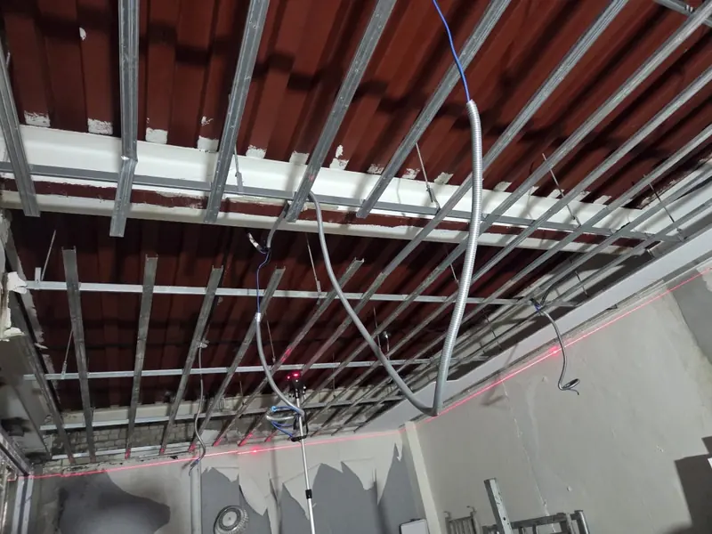
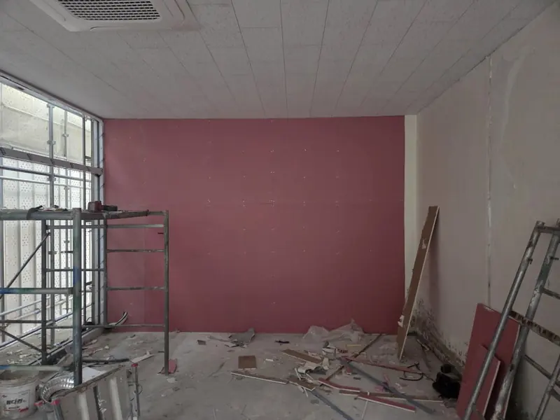
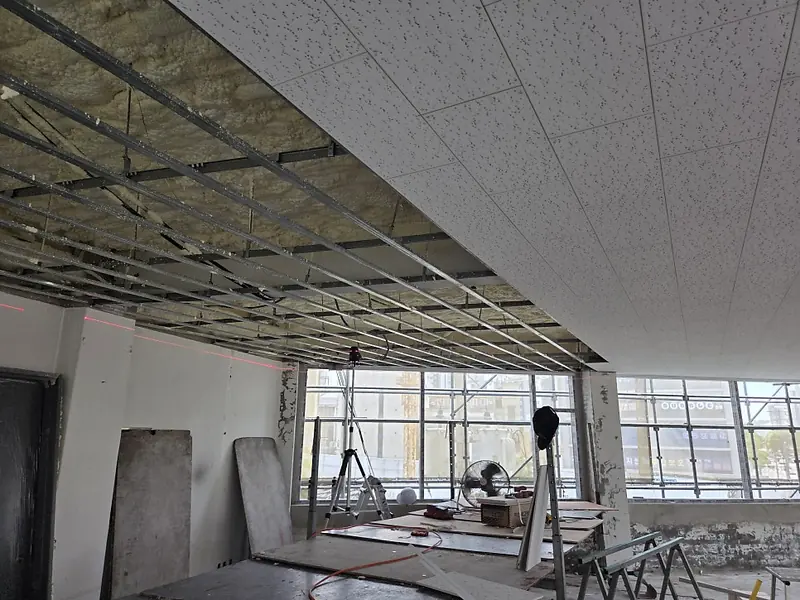
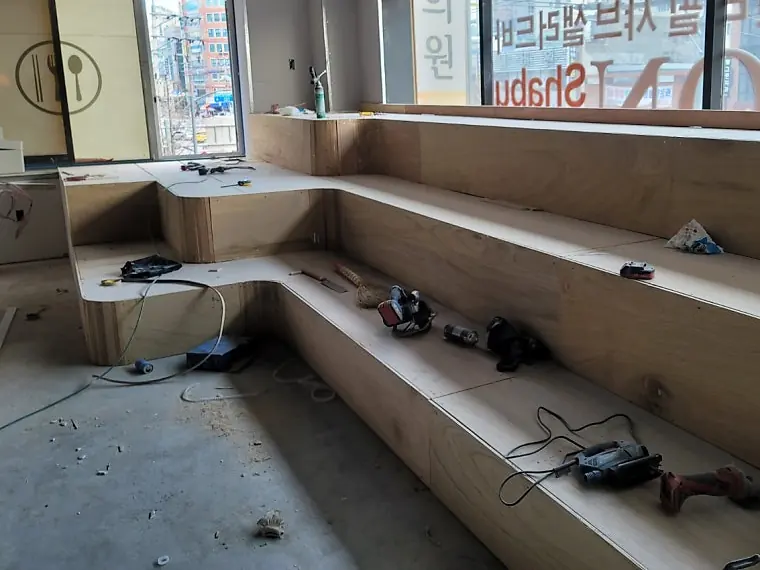
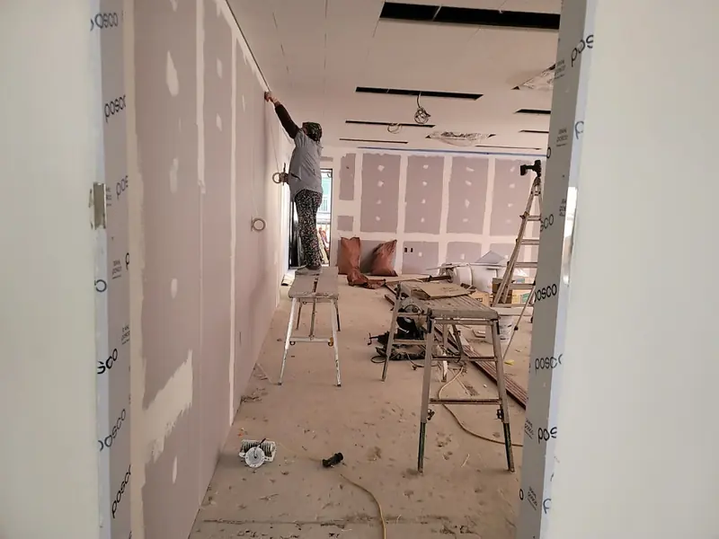
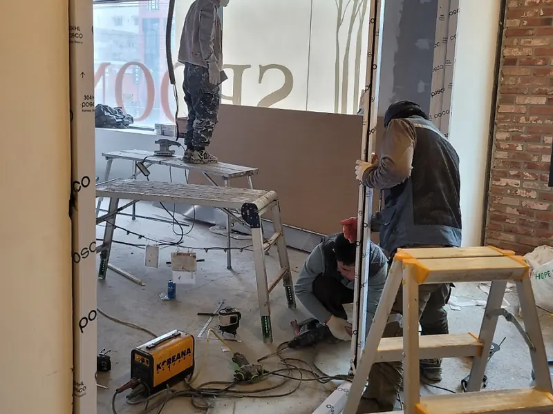
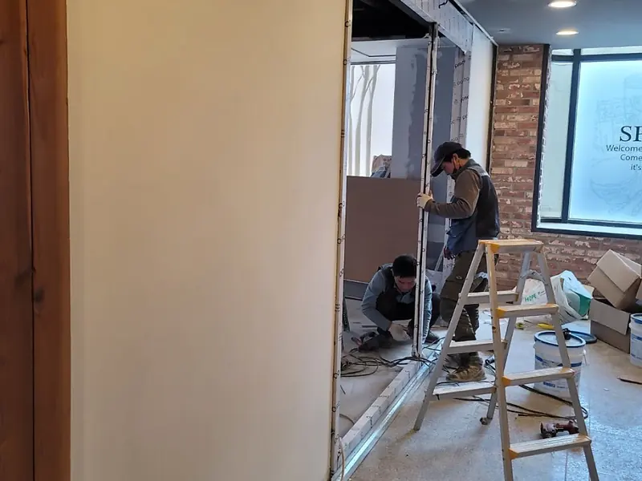

사업분야
경량철골과 칸막이, 천장공사를 중심으로 바닥, 철거·원상복구, 인테리어까지 실내 공사에 필요한 공정을 맡습니다.

경량철골
천장틀과 벽체의 뼈대를 세웁니다
대경기업의 주력 공사입니다. 레이저 수평기로 수평과 수직을 맞춰 경량철골 천장틀과 벽체 스터드를 바닥과 천장에 단단히 고정합니다. 골조를 세우면서 CD관과 전기 배선도 함께 정리해 벽 안에 안전하게 묻습니다.
주로 하는 일
- 경량철골 천장틀
- 칸막이벽 스터드·러너 골조
- 레이저 수평기로 수평·수직 맞춤
- 골조 안 CD관과 전기 배선 정리

칸막이·가벽
공간을 쓰임에 맞게 나눕니다
상가, 학원, 사무실을 방과 복도로 나눕니다. 석고보드 가벽과 래핑 가벽, 유리칸막이를 현장에 맞춰 세우고, 방을 나눌 때 필요한 소방 기준도 함께 살핍니다.
주로 하는 일
- 방염·준불연 석고보드 가벽, 2겹 교차 시공
- 래핑 가벽: 도배·페인트 공정 없이 바로 마감
- 유리칸막이
- 흡음재 충진으로 방 사이 소음 줄이기
- 스프링클러·감지기 위치를 고려한 구획

천장공사·텍스
천장틀부터 텍스 마감, 보수까지
상가건물 천장공사를 주로 합니다. 경량철골 천장틀을 짜고 텍스나 석고보드로 마감합니다. 손상된 천장은 뼈대부터 보강해 처지거나 비틀리지 않게 고친 뒤 마감합니다.
주로 하는 일
- 천장틀 시공
- 텍스(천장재) 마감
- 석고보드 천장 마감
- 손상된 천장 뼈대 보강과 보수
바닥공사
상가 바닥을 새로 깔거나 고칩니다
상가건물 바닥공사를 맡습니다. 공간을 새로 나누거나 원상복구할 때 바닥 마감도 함께 정리합니다.
주로 하는 일
- 상가 바닥 마감
- 원상복구 때 바닥 복구
철거·원상복구
빌린 공간을 계약 전 상태로 되돌립니다
사무실, 상가, 학원을 비울 때 필요한 내부 철거와 원상복구를 맡습니다. 어디까지 걷어 내고 무엇을 되살릴지 계약 내용과 현장을 함께 보고 정합니다. 리모델링 전 부분 철거도 합니다.
주로 하는 일
- 칸막이, 천장, 바닥재 등 내부 철거
- 철거 폐기물 정리와 반출
- 벽, 천장, 바닥 마감 복구
- 리모델링 전 부분 철거
원상복구 전에 확인할 것
- 계약서의 원상복구 범위
임대차 계약서와 특약에 어디까지 되돌려야 하는지 적혀 있습니다.
- 입주할 때의 상태
입주 당시 사진이나 도면이 있으면 범위를 정하기 쉽습니다.
- 철거할 것과 남길 것
건물주나 다음 임차인과 남겨 두기로 한 것이 있는지 확인합니다.
- 반납일과 공사 시간
반납일과 건물에서 공사할 수 있는 시간을 미리 알아 둡니다.

목공사·인테리어
목공으로 완성하는 실내 공간
가벽, 문틀, 몰딩 같은 목공 작업과 실내 인테리어 공사를 맡습니다. 창가 계단식 좌석처럼 공간에 맞춘 목공 구조물도 만듭니다.
주로 하는 일
- 가벽, 문틀, 몰딩
- 계단식 좌석 등 맞춤 목공
- 상가, 학원, 사무실 인테리어

수장공사
벽과 천장을 매끈하게 마감합니다
석고보드 이음매와 타카 자국을 퍼티로 다듬고, 천장과 벽이 만나는 곳은 몰딩과 코킹으로 정리합니다. 도배나 페인트를 해도 흠이 드러나지 않게 바탕을 만듭니다.
주로 하는 일
- 이음매 퍼티 작업
- 몰딩, 코킹 마감
- 벽, 천장, 바닥 마감재

잡철·금속공사
현장 치수에 맞춰 만들고 다는 철물
스테인리스 문틀, 난간, 철재 프레임처럼 건물 곳곳에 들어가는 철물을 현장에 맞춰 제작하고 설치합니다. 낡은 철물을 고치거나 바꾸는 일도 맡습니다.
주로 하는 일
- 스테인리스 문틀
- 난간, 계단, 철재 프레임
- 낡은 철물 보수와 교체

창호공사
문과 창을 새로 달거나 바꿉니다
출입문과 문틀, 창을 새로 달거나 바꿉니다. 가벽에 맞춰 개구부를 내고 문틀과 도어를 세우며, 원상복구 때는 처음 상태의 문과 창으로 되돌립니다.
주로 하는 일
- 문틀, 도어 설치
- 가벽 개구부와 래핑 문틀
- 창 설치와 교체
공장 보수공사
쓰다가 낡은 공장 내부를 고칩니다
공장 안의 칸막이, 천장, 문, 철물처럼 낡았거나 바꿔야 할 곳을 고칩니다. 공장 작업 일정을 듣고 공사 시간을 정합니다.
주로 하는 일
- 내부 칸막이, 천장 보수
- 철물, 금속 보수
- 내부 마감 보수
진행 과정
공사 종류와 관계없이 보통 이 순서로 진행합니다.
- 1
현장 확인
현장을 보고 공사 범위와 지금 상태를 확인합니다.
- 2
견적
확인한 범위를 바탕으로 공정별 견적을 드립니다.
- 3
시공
정한 일정에 맞춰 골조부터 마감까지 진행합니다.
- 4
마감·정리
폐기물을 치우고 청소한 뒤 현장을 넘겨 드립니다.
공사할 공간이 있다면 알려 주세요
현장 위치와 공사 종류, 원하는 일정을 남겨 주시면 확인 후 연락드립니다.